Kalman滤波及imu与深度相机融合
1. 随机变量
随机变量是一个集合，包含对应的随机试验所有可能的结果取值
k 阶原点矩，是随机变量 k 次幂的期望：
k 阶中心距，是随机变量关于均值的散布的 k 次幂的期望：
一阶原点矩：-测量结果的均值
二阶中心距：-测量结果的方差
1.1 基本期望代数运算法则
对于N个给定的X和Y的总体：
对于N个样本估计总体：
1.3 协方差矩阵
协方差矩阵，对于一个二维随机变量：
对于n维随机变量，协方差矩阵为：
1.3.1 性质
- 协方差矩阵的对角元素即为每个多维随机变量分量的方差：
- 由于对角元素非负，协方差矩阵的迹（对角元素之和）也非负：
- 因为 , 协方差矩阵是对称阵：
- 协方差矩阵是半正定矩阵：
如果对于任何向量 v≠0，都有 *vTAv*≥0，则矩阵 A 称为半正定矩阵
A 的特征值均为非负。
1.3.2 期望
1.4 多变量正态分布
单变量正态分布 ：
n维多变量正态分布记为：
1.5 置信区间
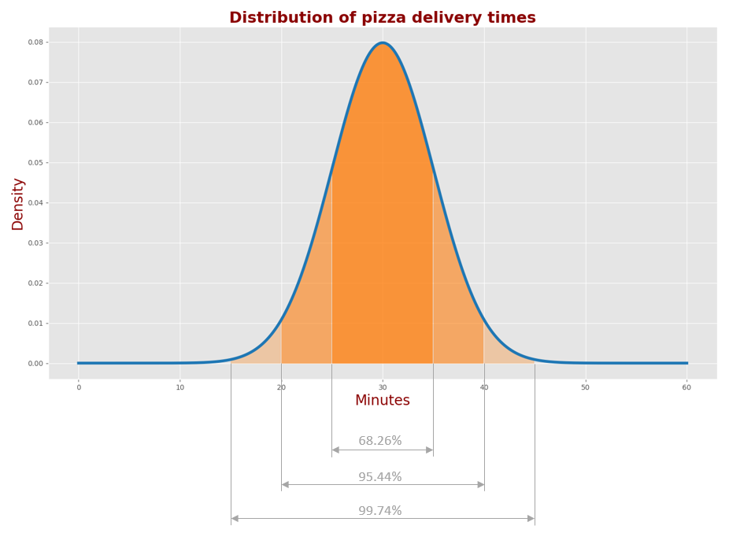
双变量正态分布的概率密度函数以一个二维高斯函数的围成体积来描述
例如，二维高斯函数在 1σ对应的水平切片内部围成的体积是围成总体积的39.35%
1.6 置信椭圆
二维高斯函数的水平切片向下下投影形状为一个椭圆
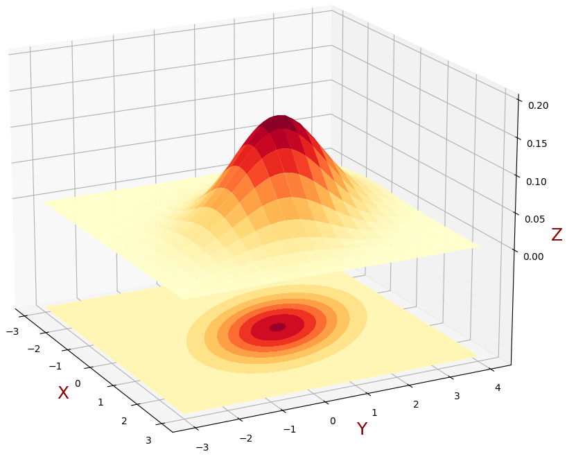
协方差椭圆是高斯分布的一条特殊等高线，使我们能以二维形式展示 1σ 置信区间，从而从几何角度直观解释协方差矩阵。
任何椭圆可以由四个参数描述：
椭圆心
半长轴
半短轴
朝向角
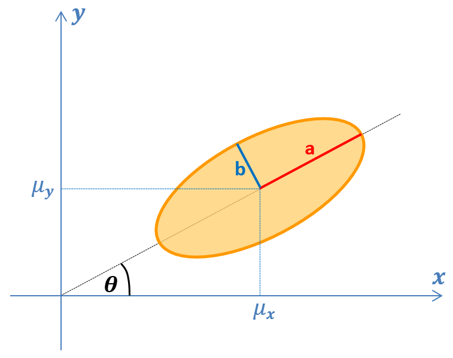
椭圆心是随机变量的均值：
椭圆半长轴和半短轴长度是对应随机变量协方差矩阵的特征值的平方根：
半长轴长度是最大的特征值平方根
半短轴长度是第二大的特征值的平方根
椭圆的朝向由随机变量协方差矩阵的特征向量给出：
式中：
协方差椭圆 ，与之对应的概率为：
则对于任意概率，我们可以找到一个椭圆放缩系数：
特别地，对95%的概率：
2. 估计，准度和精度
估计（Estimation） 是对系统的隐藏状态的估计
准度 （Accuracy） 描述测量值与真值的接近情况，低准度系统被称为有偏（Biased）系统，测量结果往往受系统性误差（偏差）的影响
精度（Precision）描述一系列测量值相对同一个真值的偏差分布情况，散布对测量的影响可以通过对测量结果求平均或进行平滑来降低
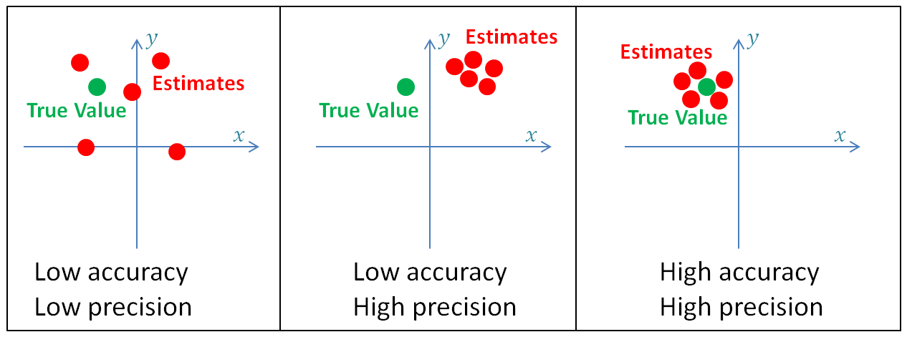
要求测量系统是无偏（Unbiased）的
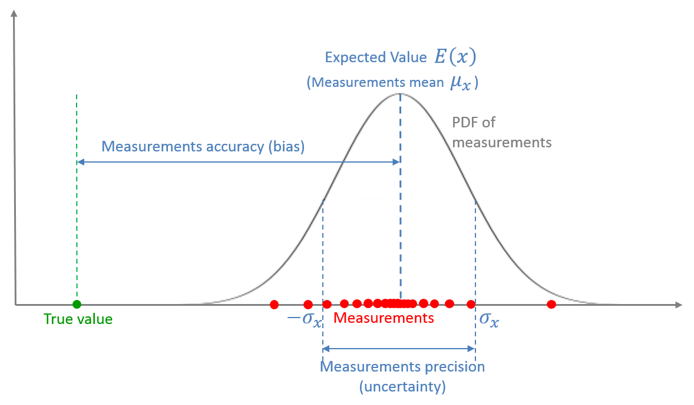
一次测量是对一个随机变量的取样，该随机变量由一个概率密度函数（PDF）来描述
多次测量的平均值就是该随机变量的期望
均值和真值之间的差是该测量系统的偏差或者系统性误差，它构成了测量系统的准度
测量值的散布程度是该测量系统的测量噪声，又叫随机测量误差或测量不确定性，它构成了测量系统的精度
3. 卡尔曼滤波器
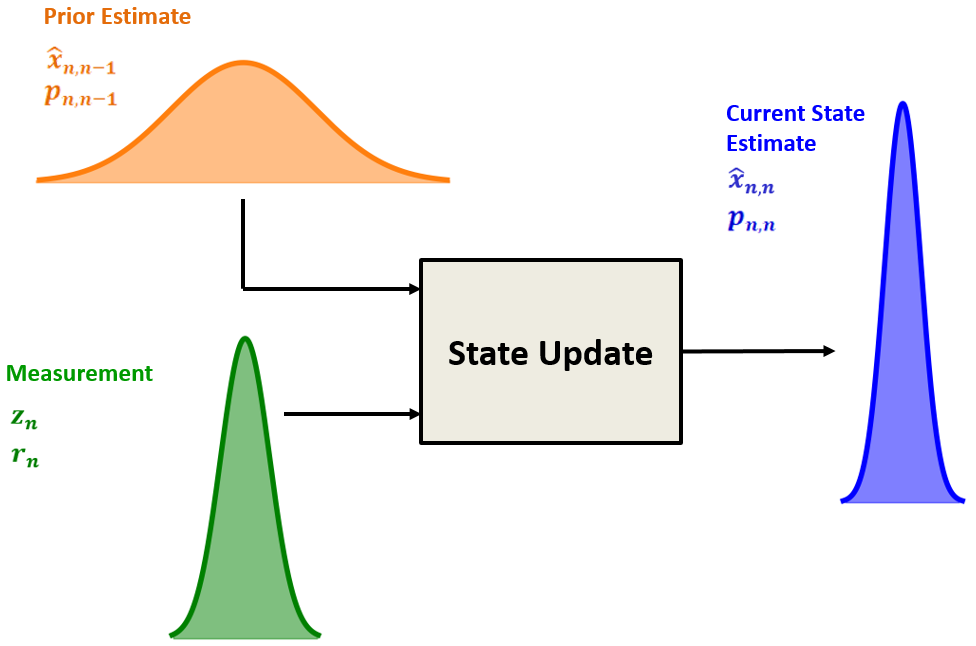
卡尔曼滤波器是一种最优滤波器，最优性体现在它能够把上述状态预测和测量值融合在一起，使得得到的当前状态估计不确定性最小。
当前状态估计值是状态预测和测量值的加权和：
式中 和 分别是测量值和状态预测的权重。
对应地，方差如下：
把上述结果代入当前状态估计:
还需要得到当前最优状态估计的方差：
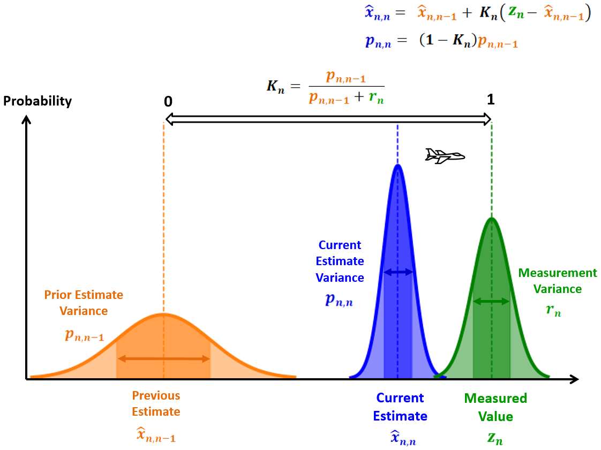
3.1 状态外插方程
基于当前的估计来预测或估计未来的状态
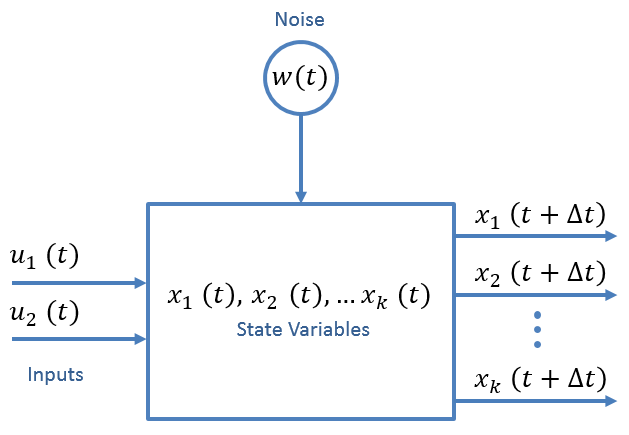
状态空间方程：
我们需要寻找：
可以得到：
3.2 协方差外插方程
估测的未来的状态估计的不确定性
推导：
3.3 过程噪声矩阵
在多维情况下，过程噪声是一个协方差矩阵，记为 ：
过程噪声也可以是相关的。比如匀速运动模型假设零加速度（a=0），但实际加速度的随机噪声 会造成速度和位置产生对应的扰动。这种情况下，过程噪声在状态变量间就是存在互相关的。
过程噪声就是模型不准确性，模型近似程度越高就越不准确，噪声方差就要选得越大，大到一定程度KF就只相信测量值了，就起不到滤波效果了。
3.3.1 离散噪声模型
离散噪声模型假设噪声在每个采样点是不同的，但是在采样点之间是相同的（零阶保持）。
对匀速运动模型，过程噪声协方差具有下述形式：
$$\boldsymbol{Q}=\left[\begin{array}{cccc}
V(x) & COV(x,v) \\
COV(v,x) & V(v) \\
\end{array}\right]$$
$$V(v)=\sigma_v^2=E(v^2)-\mu_a^2=E((a\Delta t)^2)-(\mu_a\Delta t)^2={\Delta t}^2(E(a^2)-\mu_a^2)={\Delta t}^2\sigma^2_a$$
$$V(x)=\sigma_x^2=E(x^2)-\mu_x^2=
E((\frac{1}{2}a\Delta t^2)^2)-(\frac{1}{2}\mu_a\Delta t^2)^2=\frac{{\Delta t}^2}{4}(E(a^2)-\mu_a^2)=
\frac{{\Delta t}^2}{4}\sigma^2_a$$
$$COV(x,v)=COV(v,x)=E(xv)-\mu_x\mu_v=
E(\frac{1}{2}a\Delta t^2a\Delta t-\frac{1}{2}\mu_a\Delta t^2\mu_a\Delta t)=\frac{{\Delta t}^3}{2}(E(a^2)-\mu_a^2)=
\frac{{\Delta t}^3}{2}\sigma^2_a$$
$$\boldsymbol{Q}=\sigma^2_a\left[\begin{array}{cccc}
\frac{{\Delta t}^2}{4} & \frac{{\Delta t}^3}{2} \\
\frac{{\Delta t}^3}{2} & {\Delta t}^2 \\
\end{array}\right]$$
3.4 测量方程
3.6 协方差更新方程
当前状态估计的不确定性
推导：
带入测量方程：
带入：
由于 是先验估计的误差，与当前测量噪声 无关。两个不相关的随机变量的积的期望是0。
展开：
3.7 卡尔曼增益
推导：
要最小化方差的和，也就是最小化 :
对 $$K_n
由于 ：
由于 ：
3.7.1 协方差更新方程简化
带入 ：
这个方程看起来要精炼很多并且容易记忆，并且在许多情况下没什么问题。
但是，在计算卡尔曼增益时的一个小误差（浮点截尾误差）可能给结果带来巨大的偏差。
的差可能因为浮点计算误差而使其结果不再是对称阵。这个方程在数值计算上并不稳定。
3.8 总结
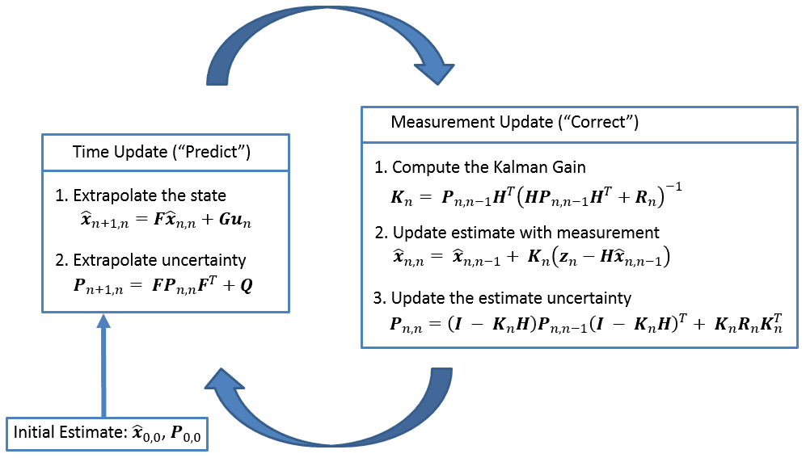
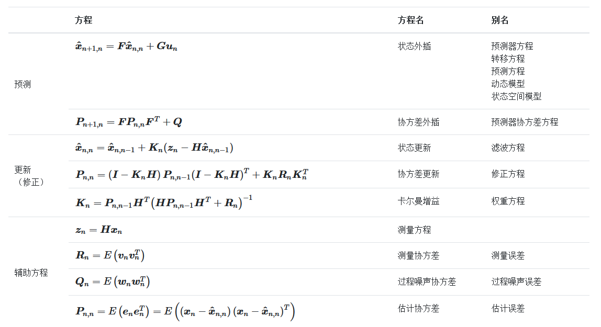
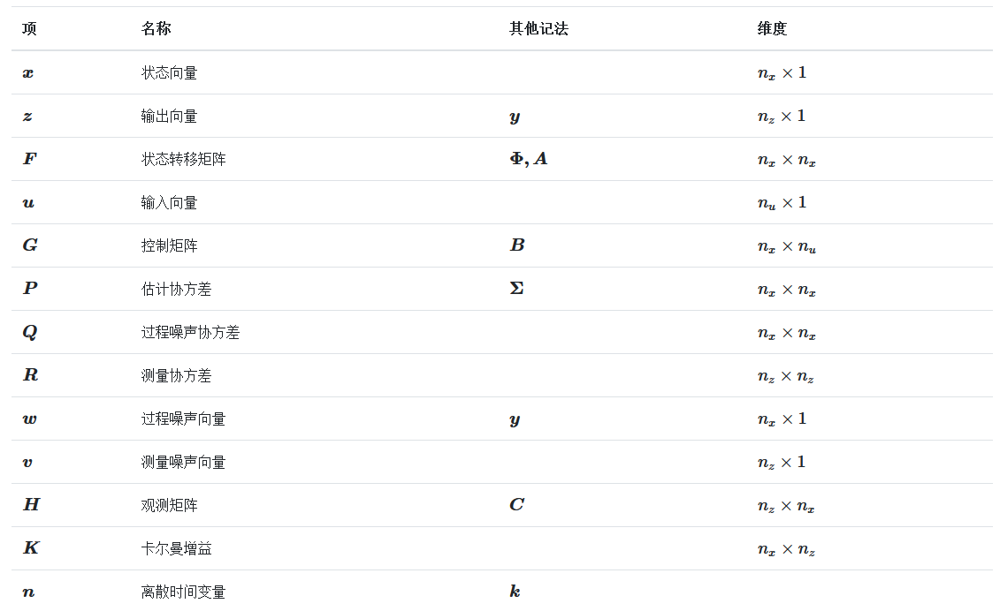
是状态向量中的状态个数
是测量到的状态个数
是输入向量中的元素个数
4. 误差传播
设测量（C）由一些测量值（X和Y）计算得到：
那么：
其中， 称为雅克比矩阵
如果X，Y相互独立，那么：
5. 融合算法
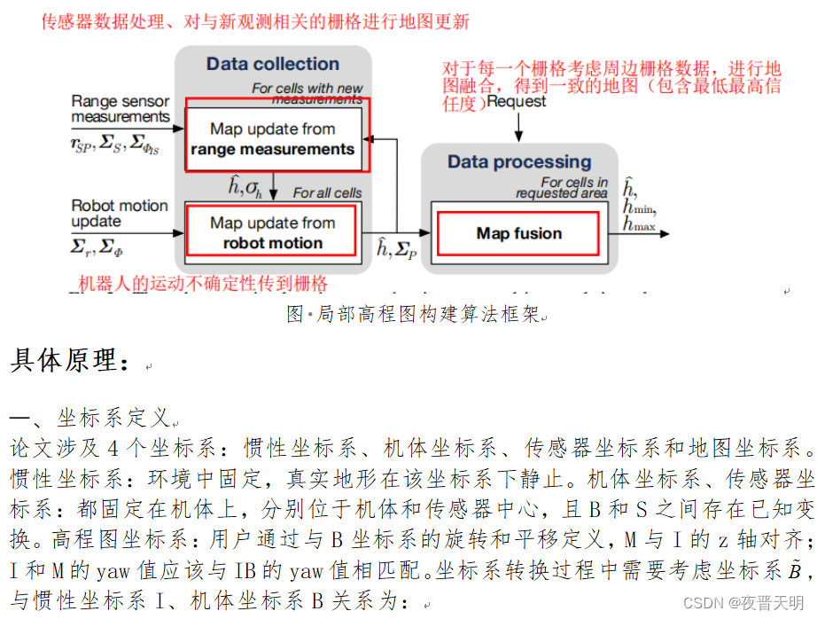
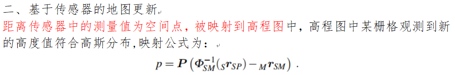
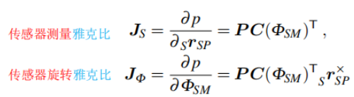
5.1 计算 ：
5.2 计算 ：
$$J_\phi=P {{^B}R_M^T}({^S}R_B^T{^S}r_{SP}^{\times}+{^B}r_{BS}^{\times})=P {{^S}R_M^T}({^S}r_{SP}^{\times}+{^S}r_{BS}^{\times})$$这个和论文里不一样，可能是考虑了BS向量的不确定性：
$$p=P({^S}R_M^{T} {^{S} r_{SP}}+{^S}R_M^T{^{S} r_{BS}}-{^{M} r_{BM}})$$
5.3 计算
相机参数：
- depth_to_disparity_factor
将深度值（Z坐标）转换为视差（disparity）的缩放因子。
factor是基线长度：指两个相机（或双目传感器的左右镜头）光学中心之间的水平距离
- lateral_factor
控制水平方向（X/Y平面）的测量误差增长速率。反映像素匹配误差和镜头畸变导致的水平不确定性。
- 深度不确定性参数（p1~p5）
$$varianceNormal=(\frac{factor}{{disparity}^2})^2[(p_5disparity+p_2)\sqrt{(p_3disparity+p_4-j)^2+(240-i)^2}+p_1]$$
| 参数 | 物理意义 | 来源 |
| — | ———————————————— | —————- |
| p1 | 基础噪声：与距离无关的固定误差（如传感器噪声） | 硬件噪声、量化误差 |
| p2 | 线性视差项系数：调节误差随距离的线性增长 | 匹配算法误差 |
| p3 | 列方向缩放系数：控制误差在图像列方向的分布 | 镜头畸变（如径向畸变） |
| p4 | 列基准偏移：图像中心列的参考值 | 相机标定内参 |
| p5 | 高阶视差项系数：捕捉远距离的非线性误差（如三角测量误差） | 基线长度限制 |
深度误差（Z方向）
近距离：
p_1主导（固定噪声）。中距离：
p_2和p_3主导（线性增长 + 边缘效应）。远距离：
p_5和(factor/disparity²)²主导（误差随距离四次方增长）。
水平误差（X/Y方向）
由
lateral_factor控制，误差随距离线性增长：水平误差∝distance×lateral_factor水平误差∝distance×lateral_factor